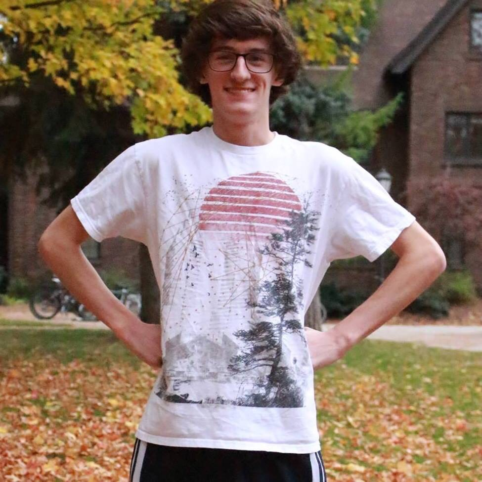

The Team
Our names are Kelsey Segren and Josiah Gallegos. We are students at Whitworth University looking to create a program to help the greater society
while still catering to what we both enjoy most: baseball and making games. With Kelsey's love of baseball and Josiah's enjoyment in making games,
Beta Baseball was created.
Kelsey Segren
I am a senior, Mathematical Economics major from Bellingham, WA. This major has prepared me to pursue a career in the field of data analytics
which I hope to gear toward working in a baseball analytics department in the future. My passion for baseball started by simply keeping score
with pencil and a scorebook and then using an IPad app. The app was able to record lots of statistics including spray charts. Being able to make
predictions based on a sample of data fascinated me when I was only 14 and continues to this day.
Josiah Gallegos

I am a junior double majoring in Mathematics and Computer Science that's twenty years old and comes from Happy Valley, Oregon. I chose these fields
of study because I loved the problem solving aspect of each but now look to use them to develop video games in the future. I've always had a knack for
challenging my abilities and the abilities of my friends yet also had the desire to create and be imaginative, and so my passion for making video games
began.